Select any picture to view an
enlargement in a new window
1917—American Dressmaking Step by Step
by Mme. Lydia Trattles Coates
Chapter 14—Tailoring
Lesson 297—General Instructions for Tailoring
To do good tailoring one must have a thorough knowledge of, and ability to do, the following:
- To alter coat, jacket, and skirt patterns until they fit perfectly.
- To press neatly and correctly.
- To do first-class machine work, keeping perfect lines.
- To make even, uneven, and diagonal basting or padding stitches; the tailors' tacks; invisible slip stitch, and catch stitch.
- To follow details correctly and carefully.
With this foundation, generally speaking, any one can successfully venture into tailoring.
Lesson 298—Tailored Coats and Jackets
- To prepare materials. Everything must be shrunk with the exception of the linings and thread. All of the garment material, unless it be silk or velvet, should be sponged and shrunk so that the pressing can be done without spotting the cloth and so that the garment will hold its shape when made. The canvas, crinoline, bust forms, and all interlinings must also be shrunk. Shrink the tape unless silk seam tape is used, and shrink any muslin, cotton flannel, or French flannel which may be used for shoulder guards. Complete instruction for the preparation of materials will be found in Chapter II, Lesson 4.
- Obtain the model's measurements. Be very exact, as a strictly tailored garment should conform to the lines of the body. If the measurements of either the model or the pattern are not correct good results can not be expected. For study of body measurements see Lesson 7.
- Obtain the measurements of the pattern. (Lessons 13, 14, and 15.)
- Figure the specifications for any necessary alterations. (Lesson 18.)
- Make any necessary alteration of pattern. (Lesson 20.)
- Fold the material correctly and economically for cutting. (Lesson 3.)
- Lay the pattern onto the material according to the grain and fold marks of the pattern and the warp of the material. (Lesson 34.) Pin or weight down the pattern in place.
- Construction marks. Mark all perforations with tailors' tacks. For detailed study of tailors' tacks see Lesson 34. Mark all center lines with basting stitches about 1 inch in length. With tailors' chalk mark an extra margin of 1/2 of an inch to be left in cutting around the neck and arm-scyes. In pressing, these edges sometimes become stretched or drawn and this extra outlet is then of great value.
- Cut out the outside of the garment using very sharp cutting shears. Clip every notch. For instruction in correct cutting see Lesson 35. Cut out only the body portion of the coat until after the first fitting.
- 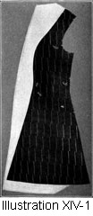The interlining. If the coat is to be interlined throughout lay the underside of the cut pieces of the garment over the interlining material and baste together with long diagonal basting stitches. (Lessons 42 and 55.) Then cut out the interlining following the lines of the coat. (Illustration XIV-1.) French flannel, lamb's wool, or cotton flannel is usually used for interlinings and there are many new interlinings on the market, from time to time. When interlining a material which has a nap, such as velvet or broadcloth, place the woolly part of the flannel toward the garment. When interlining a smooth faced material, such as serge or silk, turn the woolly part of the interlining toward the body and the smooth side toward the garment material.
- 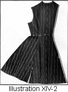 Baste the coat together. The side-front and side-back seams are usually basted for the fold lap seam. (Lesson 80.) Turn under the seam of the center-front and center-back portions exactly on the seam line. Baste. (Illustration XIV-2, A.) Baste the turned edge of the center-front and center-back portions over the unturned seams edge of the side-front and side-back portions. (Illustration XIV-2, B.) The edges of the turnings of the center portions must be brought exactly to the seam line of the side portions. Pin together at the notches and then baste according to instructions found in Lesson 55. If an interlining is used, the side-front seams and the side-back seams of the interlining are basted with a plain seam (Illustration XIV-3, C) and the side seams of the outside of the garment are basted to form a separate seam.
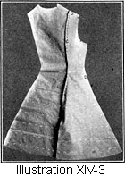Baste all other inside seams of the garment into plain seams. If interlining is used, baste the underarm and shoulder seams of the interlining and the garment together. (Illustration XIV-3, D.) - 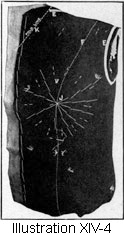 Tape the neck and armscye temporarily. Baste tape around the neck and arm-scye so that in trying on garment and handling the material these portions will not become stretched or out of shape. (Illustration XIV-4, E.) If interlining is used it is unnecessary to tape the arm-scye, but baste the interlining firmly to the garment 3/8 of an inch from the edge.
- Try on and make any necessary alterations (Lesson 144), and then press the side seams before stitching.
- Stitch all seams except the shoulder seams. If interlining is used stitch the interlining seams into a plain seam and press open. If the fold lap seam is used on the side seams, stitch 1/8-inch back from the edge of the fold (Illustration XIV-4, F), stitching through the interlining.
- Press seams. For special instruction see Lesson 5. If the seams do not lie flat in pressing they should be clipped at frequent intervals. (Illustration XIV-6, G.) It is always necessary to clip the seams at the waist-line and on the side lines.
- Bind seams. (See Lessons 65 and 66.) Bind the side seams together and the underarm seams open. (Illustration XIV-12, H.) When a lining is used it is seldom necessary to bind the seams.
TO PUT IN THE BUST FOUNDATIONS OR CANVAS
- Cut out the canvas. If the canvas is to extend entirely across the chest and below the bust as well as in the fronts and revers, bust foundations will be needed. Beginners may use the ready-made bust foundations as they save an immense amount of time and labor and only tailors of long experience undertake the making of these foundations.
If canvas is desired only for the fronts and revers, cut out the canvas using the pattern given for the front facing. If no facing pattern is included, cut the canvas the width desired using the pattern of the front of the coat. (Illustration XIV-11, I.) - Locate the tip of the bust of the garment and the tip of the bust of the canvas foundations and tack together. (Illustration XIV-4, J.)
- Pin in the bust foundations. Hold the canvas over the left hand. Draw the front of the garment tightly over the canvas, pinning smoothly. Never lay the bust foundations flat on the table while pinning. This kind of work must be done over the hand so that the work will not become flattened or out of shape.
- Baste in the bust foundations. After pinning together smoothly, begin at the tip of the bust on the right side of the garment and with long diagonal bastings baste the material to the canvas, taking care to baste always in a direction away from the tip of the bust. (Illustration XIV-4.)
- Mark the fold line of the revers. Use even basting stitches and let them show on both the canvas and the right side of the garment. (Illustration XIV-4, K.) The fold line may be taped if desired.
- 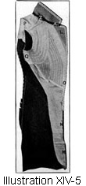 To pad the revers. (Illustration XIV-5,L.) Begin at the fold line 3/8 of an inch from the top of the rever bind with small padding stitches taken through both canvas and material follow the line of the fold down to 3/8 of an inch of the edge of the rever. Do not work nearer the edge of the rever than 3/8 of an inch, because the edge of the canvas must be cut away.
In padding use thread of the same color as the garment. Do all padding work from the canvas side. Use the padding stitch which is taught in Lesson 42. Let the short, straight stitches of this padding stitch show as little as possible on the right side of the garment. However, the padded portion comes under the rever, so the stitches will not show when the garment is worn.
When the coat is to be worn with the lapels folded to the front so as to close at the neck, omit the padding of the revers. (Illustration XIV-12.) - Trim away the edges of the canvas to 3/8 of an inch of the edge of the garment. (Illustration XIV-5, M.)
- Turn the edge of the material of the garment over the trimmed edge of the canvas and baste. (Illustration XIV-5, N.)
- Tape the front of the coat. (Illustration XIV-5, O.) Use tape about 3/8 of an inch wide. Baste the tape so that it covers the raw edges of the material which has been turned over the canvas and so that the outside edge of the tape is 1/8 of an inch from the edge of the garment. Catch stitch the tape to the garment, catch stitching from edge to edge of the tape. For instructions how to make the catch stitch see Lesson 54. Remove the bastings.
- The shoulder guard. If the coat is not interlined throughout a shoulder guard is usually required. (Illustration XIV-5, P.) Use French flannel or cotton flannel for this purpose. Baste the flannel flat over the upper portion of the coat, letting it extend over the underarm seam and from two to four inches below the arm-scye. Then baste the flannel flat over the upper portion of the front of the coat, rounding over the busts and extending about an inch over the canvas. Cut out the shoulder guard, following the exact outlines of the top of the coat and rounding the back portion between the shoulder-blades.
- Join the bust foundations and the shoulder guard. Lap the edges of the shoulder guard over the edges of the canvas and catch stitch together. (Illustration XIV-5, Q.)
- 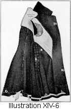 Bind all raw edges of the canvas with the same kind of tape that is used for the other portions of the garment. (Illustration XIV-6, R.)
- Baste together the shoulder seams of the garment and the shoulder guards, and try on the coat. Make any necessary alterations for the shoulder and neck. It sometimes happens that the extra amount taken up by the bust foundations and the shoulder guards changes the proportions of the garment, a little. Therefore the shoulder seam should not be closed until the garment has been carefully tried on after all interlinings and canvas have been put in. The shoulder seams are then stitched.
- Pad out the hollows. Should it happen that one has a sinking arm-scye or a hollow chest or one shoulder higher than the other, or any other defect, the garment is not fitted into the hollows or defects, but the hollow places must be padded out. Use sheet wadding, laying it heavier over the hollow places and decreasing the amount of the padding near the edges of the hollows. (Illustration XIV-6, S.) This padding should be done on the figure and the sheet wadding basted to the shoulder guards, not to the outside of the garment.
THE COLLAR
- Make any necessary alterations in the collar pattern. (Lesson 29.)
- Cut out the collar (Lesson 35) and baste the collar of the material over the canvas and cut out the canvas.
- 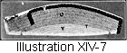 Mark the roll line of the collar using even basting stitches showing on both the right side of the material and the canvas. (Illustration XIV-7, T.)
- Pad the collar using the padding stitch and pad from the top of the collar down to the roll line. Do not pad nearer than 3/8 of an inch from the edge of the collar. (Illustration XIV-7, U.)
- Cut away the canvas to 3/8 of an inch of the edge of the collar (Illustration XIV-7, V) and baste the 3/8 of an inch margin of the material over the cut edge of the canvas. (Illustration XIV-7, W.)
- Tape the outer edge of collar exactly as the front of the coat is taped. (Illustration XIV-7, X.)
- Machine stitch from the roll line down to the bottom of the collar with rows of stitches about 3/8 of an inch apart, following either curves or diagonal lines. (Illustration XIV-7, Y.)
- Join the collar to the garment. Make a plain seam joining the neck of the collar to the neck of the garment, stretching the collar between the notches. (Illustration XIV-5, Z.) Cut away the canvas to within 1/8 of an inch of the seam line and clip the seam so that it will not draw.
- Join the end of the under portion of the collar to the upper ends of the revers of the coat and press the seam open. (Illustration XIV-5, A1.)
LOOPS
- If loops are to be used for fastening instead of buttonholes, the loops are now sewed to the canvas and the turned taped portion of the garment.
POCKETS
- If pockets are desired make them before the lining is put into the coat or before going further with the construction of the garment. See special instructions for pocket making. (Lesson 199 or 200.)
APPLYING THE OVERFACING OF FRONTS, COLLARS, AND REVERS
- 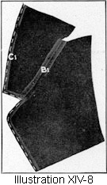 Make the facing seams. If the facing has a seam in the center-back of the collar, stitch the seam and press it open. If the facing of the collar and the facing of the revers are joined with a plain seam, make the seam and press it open. (Illustration XIV-8, B1.)
- Turn all edges of the collar, revers, and fronts of the facing toward the under or wrong side of the material, making the turning 3/8 of an inch wide. (Illustration XIV-8, C1.) Baste carefully.
- Baste on the overfacing. Baste the edges of the facing of the collar, revers, and fronts to the outside edges of the collar, revers, and fronts of the garment. (Illustration XIV-6, D1.)
TURN UP THE BOTTOM OF THE COAT
- Try on the coat and have the length carefully marked. Run a thread on the exact line on which the coat is to be turned. (Illustration XIV-6, E1.)
- Cut a stay. (Illustration XIV-6, F1.) If the coat has a straight line at the lower edge use a straight strip of lining or canvas the width of the turning, or tape may be used if it is the correct width. If the bottom of a coat has a circular or irregular line use a bias stay.
- Baste in the stay so that its lower edge comes directly to the marked line where the lining is to be. (Illustration XIV-6, G1.)
- Stitch the right side of the lower edge of the coat and the edge of the stay together. (Illustration XIV-6, H1.)
- Turn up the coat on the marked length line and baste. (Illustration XIV-6, 11.)
- Catch stitch the edge of the tape to the garment and press the hem. (Illustration XIV-6, J1.)
MACHINE STITCH THE EDGES
- Machine stitch close to the edge entirely around the garment. (Illustration XIV-6, K1.) Press the coat after removing all unnecessary bastings.
THE LINING
- To make the lining. Follow exactly the same steps for the cutting, fitting, stitching, clipping, and pressing of the lining of the coat which is followed for the outside portion, except that the center front of the lining is cut only to about one or two inches beyond the facing and an extra inch allowed for turning in. The side seams of the lining are stitched into a plain seam.
- To put in the lining. Baste together the center-back of the coat and the lining. Baste the lining to the shoulder but leave the shoulder seam of the lining open. Baste the neck and the arm-scye of the lining and the garment smoothly together. Catch stitch the underarm seams of the lining to the underarm seams of the coat.
Turn under the front edges of the lining and baste one inch over the front facings. Turn under the neck portion of the lining and baste so that it covers the entire seam of the collar. Turn under the back portion of the shoulder seam and bring it over the front shoulder seam of the lining and baste. Turn under the bottom edge of the lining and baste 1/4 of an inch from the bottom edge of the coat. Finish by catching the lining securely to the garment with invisible slip stitches. (Lesson 51.)
THE SLEEVES
- Make all necessary alteration of the sleeve pattern. (Lesson 24.)
- Cut sleeves. (Lesson 35.)
- Join together the seams of the sleeves. (Lesson 55.)
- Put in the sleeves. (Lesson 174), fit, then make any necessary alterations.
- Stitch in the sleeves. Stitch the seams of the sleeve and then stitch the outside portion of the sleeve into the armscye of the garment, stitching through sleeve and garment, catching the lining of the garment and any canvas that there may be.
- 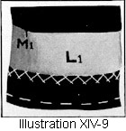Put in the stay at the bottom of the sleeve. (Illustrations XIV-9, L1 and 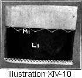XIV-10, L1.) Cut the stay on the bias 3 inches wide and put in exactly as the stay in the bottom of the coat. Clip stay at the seams (Illustration XIV-9, M1), or if one-piece sleeve of heavy material is used catch stitch canvas to wrong side of material (Illustration XIV-10, M1.)
- Put on the cuff, if cuff is desired. For instructions in making and applying cuffs to the garment see Lesson 180.
- Finish the bottom of the sleeve. Turn under the lower edge of the lining. Slip stitch the bottom of the sleeve lining to the bottom of the sleeve. Catch stitch together the front seam of the sleeve and the front seam of the lining.
- Finish the arm-scye of the garment. Turn under the upper portion of the lining of the sleeve. Bring the lining over the seam of the arm-scye and finish with the Invisible Slip Stitch. (Lesson 51.)
- Press the entire garment.
- If loops are not used, make buttonholes (Lesson 211), and sew on the buttons (Lesson 214.)
Lesson 299—Lined and Unlined, Semitailored, and Utility Coats and Jackets
- Prepare materials for tailoring. (Lesson 4.)
All of the garment material, unless it is silk or velvet, should be sponged and shrunk so that the pressing can be done without spotting the material, and so that the garment will hold its shape. The canvas, crinoline, and tape (unless silk tape is used) must also be shrunk. - Obtain the model's measurements. (Chapter III.)
- Learn the pattern's measurements. (Lesson 11.)
- Figure the specifications for any necessary alterations. (Lesson 18.)
- Make any necessary alterations on the pattern. (Lesson 19.)
- Fold the material correctly and economically for cutting. (Lesson 3.)
- Lay on the pattern according to the grain and fold marks, following warp of material. (Lesson 34.) Pin or weight down pattern.
- Construction marks. Make tailors' tacks through all perforations and mark all center lines. (Lesson 34.) With tailors' chalk mark 1/2 of an inch margin around the neck and arm-scyes. This extra margin is to be left in cutting because in pressing and fitting the edges sometimes become stretched or drawn.
- Cut out the garment using very sharp shears. Clip every notch. (Lesson 35)
- Baste the coat together. When a utility or semi-tailored coat has side-front or side-back seams they are usually basted for the fold lap seam. Follow the detailed instruction for basting these seams as given in Lesson 298, step No. 11.
In semi-tailored silk, velvet, or dressy coats and jackets the side-front and side-back seams are usually basted with a plain seam, so that no stitching appears on the right side of the finished garment.
Baste all other seams (Lesson 55) inside of the garment into a plain seam. (Lesson 56.) - Try on and make any necessary alterations. (Lesson 144.)
- Stitch all seams except the shoulder seams. If fold lap seams are used on the side-front and side-back lines, stitch it of an inch back from the edge of the fold.
- Press the side seams together and press open the underarm seams. (Lesson 5.) Clip the seams at frequent intervals so they will be flat and smooth.
- Bind seams. Bind the side seams together (Lesson 66), and the underarm seams open (Lesson 65). Do not bind the seams if the garment is to be lined throughout.
- 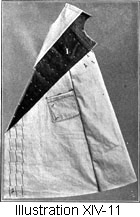Canvas or crinoline interlining. It is not always necessary to interline the collar, revers, and fronts with canvas or crinoline. This is determined by the material used and the style of the garment. If the interlining is used, cut out the canvas or crinoline for the fronts and revers, using the pattern for the front facing of the coat. If no pattern for the facing is included, use the pattern of the front of the coat. Cut the interlining the width desired and reaching from the shoulder to the bottom of the coat. (Illustration XIV-11, I.)
- If stitching as desired on the outside edge of the finished garment, baste the interlining to the fronts of the garment and to the revers, and continue as directed in steps 21 to 25, inclusive, of tailoring. (Lesson 298.)
If no stitching is desired on the outside edge of the finished garment, mark the roll line as directed in step 21, Lesson 298, and if the revers are to be padded continue in accordance with the instructions given in step 22, Lesson 298. Revers are not padded in garments where the lapels are sometimes to be worn brought forward and closed to the neck. Neither are the revers padded in silk, satin, or velvet coats or jackets.
Then after the revers have been padded tape the edge of the fronts and revers, catch stitching the tape so that the outside edge of the tape is 1/4 of an inch from the edge of the garment. (Illustration XIV-5, O.) - Baste up the shoulder seams and try on the garment. Make any necessary alterations for the shoulder and neck.
- Stitch the shoulder seams and if the coat is to be unlined bind the seams. (Lessons 65 and 66.)
PREPARE THE COLLAR
- Make any necessary alterations on the collar pattern. (Lesson 29.)
- Cut out the under portion of the collar. (Lesson 35.)
- If machine stitching on the outer edge of the collar is desired and interlining is used, cut, pad, and tape the collar and stitch up to the roll line according to instructions given in steps 33 to 36, inclusive, of Lesson 298.
If no stitching is desired on the outside edge of the finished collar, follow steps 32, 33, 34, and 37 of Lesson 298.
Then catch stitch tape 1/4 of an inch from the outside edge of the collar. It is not always necessary to interline the collar, but whenever canvas or crinoline is used tape is also used.
If interlining is not used prepare exactly as for a lined collar. (Lesson 166.) - Join the collar to the garment. Make a plain seam, joining the neck of the collar to the neck of the garment, clipping and stretching the collar between the notches to fit the neck of the garment and the model.
- Join the ends of the under portion of the collar to the upper ends of the revers of the coat and press the seam open.
LOOPS
- If loops are used for fasteners instead of buttonholes, the loops are next made and sewed to the canvas and to the taped portion of the garment.
OVERFACING OF THE FRONTS, COLLAR, AND REVERS
- If stitching is to be used to finish the outside edges of the coat prepare and put on the overfacing as directed in steps 42, 43, and 44 of Lesson 298.
If no stitching is desired on the finished edges of the garment follow step 42.
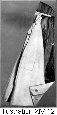Then baste the right side of the facing to the right side of the garment and stitch together with a 3/8 of an inch seam. (Illustration XIV-12, N1.)
Trim the edges of the seam down to the width of 1/8 of an inch. (Illustration XIV-12, O1.)
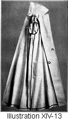Turn the facing to the underside of garment and baste down carefully. (Illustration XIV-13, P1.)
Press the edges of the coat until they are perfectly flat. When no interlining is used, put on the overfacing exactly the same as a sewed-on overfacing. (Lesson 95.) The edges may then be stitched or not as is preferred. - Bind the raw edges. If the coat is unlined, bind the inside edges of the front facing and canvas together and bind the neck portion of the overfacing. Slip stitch with invisible slip stitches the overfacing of the collar over the seam at the neck of the garment. (Illustration XIV-13, Q1.)
THE BOTTOM OF THE COAT
- Try on the coat and have the length carefully marked. Then follow steps 45 to 49, inclusive, of Lesson 298.
THE POCKETS
- Make the pockets, if pockets are desired. See special instructions for pocket making. (Lessons 199, 200, and 201.)
THE LINING
- If a lining is to be used follow steps 52 and 53 of Lesson 298.
SLEEVES
- For the cutting, fitting, and making of sleeves, follow instructions given in steps 54 to 60, of Lesson 298.
If the sleeve is to be linedcontinue with steps 61 and 62.
If the sleeve is unlined hem the bottom of the sleeve, finishing with invisible slip stitches or finish with a bias sewed-on facing (Lesson 95), and finish the arm-scyes by binding (Lesson 177). - Press the entire garment.
- If loops are not used, make buttonholes (Lesson 212) and sew on the buttons (Lesson 214).
Lesson 300—Boys' Norfolk Jacket
- To prepare materials for tailoring. Everything must be shrunk with the exception of the linings and thread. All of the garment material should be sponged and shrunk so that the pressing can be done without spotting the material, and so the garment will hold its shape. The canvas and all interlinings must also be shrunk.
- Obtain the boy's measurements. (Lesson 8.)
- Learn the pattern's measurements. (Lesson 12.)
- Figure the specifications for any necessary alteration. (Lesson 18.)
- Make any necessary alterations on the pattern. (Lesson 33.)
- Fold the material correctly and economically for cutting. (Lesson 3.)
- Lay on the pattern according to the grain and fold marks of pattern, following the warp of the material. (Lesson 34.) Pin or weight down the pattern with objects heavy enough to hold it in its proper place.
- Construction marks. Mark with tailors' tacks all perforations and mark all center lines. (Lesson 34.) Mark around all of the outside edges of the pattern with tailors' chalk. Leave 1/2 of an inch extra margin around the neck and arm-scyes. In pressing the edges sometimes become shrunk or drawn, and this extra outlet is then of great value.
- Cut out the outside material, using very sharp scissors. (Lesson 35.)
- 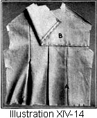 Lay in the box plaits or inverted plaits. (Lesson 122 or 123.) (Illustration XIV-14, A.)
- Baste the garment together. Use plain seams. (Lessons 55 and 56.)
- Baste on the yoke. (Lesson 164.) (Illustration XIV-14, B.)
- Try on and make any necessary alteration. (Lesson 145.)
- Stitch all seams.
- Press seams. (Lesson 5.)
- Put in canvas. Cut out the canvas for the fronts, revers, and collar. Cut the canvas after the pattern for the front facing, which will include the rever portion. If no pattern for the facing is included, cut the canvas the width desired from the pattern of the front of the coat.
- Baste in the canvas.
- Either continue with the method found in Lesson 298, or trim away the edges of the canvas or crinoline until their edges are 3/8 of an inch from the edge of the garment. (Illustration XIV-5, M.)
- Turn the edges of the material of the garment over the edges of the canvas, and baste. (Illustration XIV-5, N.)
- Tape the neck and arm-scye temporarily. Baste tape around the neck and arm-scye, so in trying on the garment and handling the material it will not become stretched and out of shape. (Illustration XIV-4, E.)
- Tape the front of the jacket. (Illustration XIV-5, O.) Use tape about 3/8 of an inch wide, and if of cotton or linen, see that it is thoroughly shrunk. Baste the tape so that it covers the raw edges of the canvas and so the outside edge of the tape is 1/8 of an inch from the edge of the garment. Catch stitch the tape to the garment. Continue this taping all the way to the bottom of the garment, or use method as found in Lesson 299.
CUT CANVAS IN THE COLLAR
- Make any necessary alteration in the collar pattern. (Lesson 29.)
- Cut out collar (Lesson 35), and baste the collar of the material over the canvas and cut.
- Pad the collar. Use the padding stitch in the collar from the outside edge down to the roll line, being careful that none of the work is done nearer to the edge of the garment than 3/8 of an inch. (Illustration XIV-7, U.)
- Cut away the canvas up to 3/8 of an inch from the edge of the collar (Illustration XIV-7, V), and baste the 3/8 of an inch margin of the material over the cut edge of the canvas. (Illustration XIV-7, W.)
- Tape the collar exactly as you taped the fronts of the jacket. (Illustration XIV-7, X.)
- Stitch up the roll line. Begin at the bottom of the collar and stitch the canvas and under portion of the collar, carrying the stitching back and forth either in curves or diagonal lines. (Illustration XIV-7, Y.)
- Join the ends of the under portion of the collar to the upper ends of the revers of the coat and press the seam open. (Illustration XIV-5, A1.)
- Join the collar to the garment. Make a plain seam joining the neck of the collar to the neck of the garment, clipping and stretching the collar between the notches to fit the neck of the garment and the model. (Illustration XIV-5, Z.)
POCKETS
- Make the pockets, if pockets are desired, before the lining is put into the jacket or before going further with the construction of the garment. See special instructions for pocket making. (Lesson 199, 200, or 203.)
OVERFACINGS OF FRONTS, COLLAR, AND REVERS
- Make the facing seams. (Illustration XIV-8, B1.) If the facing has a seam in the center-back of the collar, stitch the seam and press it open. If facing of the collar and of the revers or lapels join, stitch the seam and press.
- Turn all edges of the collar, revers, and fronts of the facing toward the wrong side of the material, making the turning 3/8 of an inch wide. (Illustration XIV-8, C1.) Baste carefully.
- Baste on the overfacing. Baste the edges of the facing of the collar, revers, and fronts to the outside edges of the collar, revers, and fronts of the garment. (Illustration XIV-6, D1.)
- Pad out the hollows. Use sheet wadding, laying it heavier over the hollow places and decreasing the amount of the padding near the edges of the hollow. (Illustration XIV-6, S.) This padding should be done on the figure, and used only when necessary.
TURN UP THE BOTTOM OF THE JACKET
- Try on the jacket and have the length carefully marked. Run a thread on the exact line the jacket is to be turned. (Illustration XIV-6, E1.)
- Turn up the garment on the exact line marked, and baste. (Illustration XIV-6, I1.)
- Press the entire garment.
FOR THE LINING OF THE JACKET
- To make the lining. Follow exactly the same steps for the cutting, fitting, and construction of the lining of the jacket which are followed for the outside of the jacket,, except that the center-front of the lining is cut only about one or two inches beyond the facing.
- To put in the lining, baste together the center-backs, the shoulder, neck, and the arm-scye of the garment and lining, turning the inside seams of the lining toward the inside seams of the jacket. Leave the shoulder seams of the lining open.
- To finish the edges of the lining. Turn under the outside edges of the lining, bringing it one inch over the front facing and covering the seams of the collar. Use the Invisible Slip Stitch (Lesson 51), and catch the lining and garment securely together.
Turn under the bottom edge of the lining up to 1/4 of an inch to 1 inch from the bottom edge of the outside of the jacket, and finish with the Invisible Slip Stitch.
THE SLEEVES
- Make any necessary alterations of the sleeve pattern. (Lesson 24.)
- Cut sleeves. (Lesson 35.)
- Baste up the sleeves. (Lesson 55.)
- Put in the sleeves (Lesson 174) and make any necessary alterations.
- Stitch in the sleeves. Stitch the seams of the sleeves and stitch the outside portion of the sleeve into the garment, stitching at the armscye through sleeve and garment lining, and any canvas there may be, and the outside of the garment.
- Finish the bottom of the sleeve. Slip stitch the bottom of the lining of the sleeve to the bottom of the outside sleeve.
- Catch stitch together the front seams of the lining and the garment, bring the lining of the sleeve over the arm-scye seam of the sleeve and finish with the Invisible Slip Stitch.
- Press the entire garment.
- Make buttonholes (Lesson 211) and sew on buttons (Lesson 214).
- Sew a tape at the center-back of the neck of the garment for hanging.
Lesson 301—Boys' Trousers
- Prepare materials for tailoring. (Lesson 4.)
- Take the boy's measurements. (Lesson 8.)
- Obtain the pattern's measurements. (Lesson 12.)
- Obtain the specifications for fitting. (Lesson 18.)
- Make any necessary alterations on the pattern (Lesson 33), or make up the trousers from cheap muslin, calico, or old material and then when perfectly fitted, rip the pieces apart and use for a pattern. The garment requires so little material that the latter method is usually preferred in order to insure a perfect and easy fit.
- Fold the material correctly and economically. (Lesson 3.)
- Lay on the pattern, according to the grain and fold marks of the pattern, following the warp of the material. (Lesson 34.)
- Put in construction marks. Make the tailors' tacks and mark all center lines. (Lesson 34.)
- Cut out.(Lesson 35.)
- If a lining is desired, lay each piece of the outside portion of the garment over the lining material, baste together and finish exactly the same as if it were double-faced material.
- Make the darts. If the back of the trousers has darts, baste and stitch them in. Cut open the dart and press flat.
- Make a slash pocket at the back over the right hip, and if a front pocket is desired, make a slash pocket just below the waist band and about two inches from the side seam. (Lesson 199.)
THE FLY
- 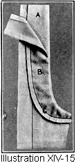 Apply facing for the upper portion of the fly. (Illustration XIV-15, A.) Cut the fly facing and lining material and sew on, following all of the rules for the sewed-on under-facing (Lesson 95), taking great care that the facing is stitched 1/4 of an inch from the seam line and drawn under 1/8 of an inch from the seam line.
- Line the upper portion of the fly. Cut a strip of lining the exact shape of the fly piece; turn the edges of the facing and the edges of the fly together and stitch. (Illustration XIV-15, B.)
- Make the buttonholes in the fly. (Lesson 211.)
- Put on the upper portion of the fly. The fly is basted back 1/8 of an inch from the edge of the garment and stitched 3/8 of an inch from the inside edge of the fly and across the lower end of the fly. (Illustration XIV-15, C.)
- Overcast the raw edges of the inside portion of the fly.
- Back stitch the fly to the facing between each of the buttonholes.
- 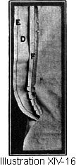Line the right-hand portion of the fly. (Illustration XIV-16, D.)
- Put on the lower portion of the fly. Put the right side of fly to the right side of the garment and stitch together in a plain seam. (Illustration XIV-16, E.) Do not stitch the facing of the fly to the garment. Press seam open. (Illustration XIV-16, F.)
- 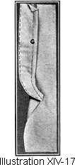Turn the work to the underside and bring the lining over the seam. Fasten lining with half back stitches (Lesson 47). Overcast (Lesson 53) raw edges. (Illustration XIV-17, G.)
- Machine stitch around the edges of the fly and 1/8 of an inch from the seam line of the fly on the material.
- Sew on the buttons. (Lesson 214.) Sew them on close to the stitched seam line of the facing.
- When no fly is desired on small boy's trousers:
- Hem under or face under the open portion of the right side of the seam.
- The extension-facing for the left side is cut double and all edges except those going over the seam are stitched together.
- Turn in the edges going over the seam and baste.
- Slip the seam between the edges of the facing and stitch.
- Put in the side pockets. (Lesson 202.)
- Baste the trousers together. Finish the garment seam either with a welt seam or a plain seam pressed open, with the edges whipped and a stay stitched down the center-front and center-back seams. A single stitched plain seam (Lesson 71, Illustration VIII-56, I) makes a good finish for the side seams.
- Finish the bottom of the trousers with a band stitched on both edges, or turn up the bottom edges into a hem and slip stitch or machine stitch.
- Join the under portion of the waist band to the top of the garment with a plain seam.
- Stitch the lower edge of the waist band to the garment.
- Sew buttons on the outside of the garment at the waist-line in case the boy wears suspenders, or narrow straps if a belt is to be worn.
Lesson 302—Boys' Blouse
- Prepare materials. (Lesson 4.)
- Take the boy's measurements. (Lesson 8.)
- Learn the pattern's measurements. (Lesson 11.)
- Figure the specifications for fitting. (Lesson 18.)
- Make any necessary alterations on the pattern. (Lesson 19.)
- Fold the materials economically and correctly. (Lesson 3.)
- Lay on the pattern. (Lesson 34.)
- Put in all construction marks. (Lesson 34.)
- Cut out the garment. (Lesson 35.)
- Baste the blouse together. Baste all seams into an inside welt seam. Welt seams are usually made on the right side of the garment, but in children's blouses the welt is made on the underside. (Lesson 75.)
- Try on and make any necessary alterations.
- Stitch all seams.
- Press seams. (Lesson 5.)
- Cut, fit, and put on collar. (Lessons 165 to 167.)
- Cut, fit, make, and put in sleeves. (Lesson 174.)
- Cut out, make, and put on cuffs. (Lesson 180 or 181.)
- Hem the bottom of the blouse. (Lesson 85.)
- Put on pockets, if pockets are used. (Lesson 199 or 203.)
- Sew on any trimming, such as braid or emblems.
- Make the shield. Cut it double and turn the edges toward each other and stitch. It is usually finished with an emblem in the center.